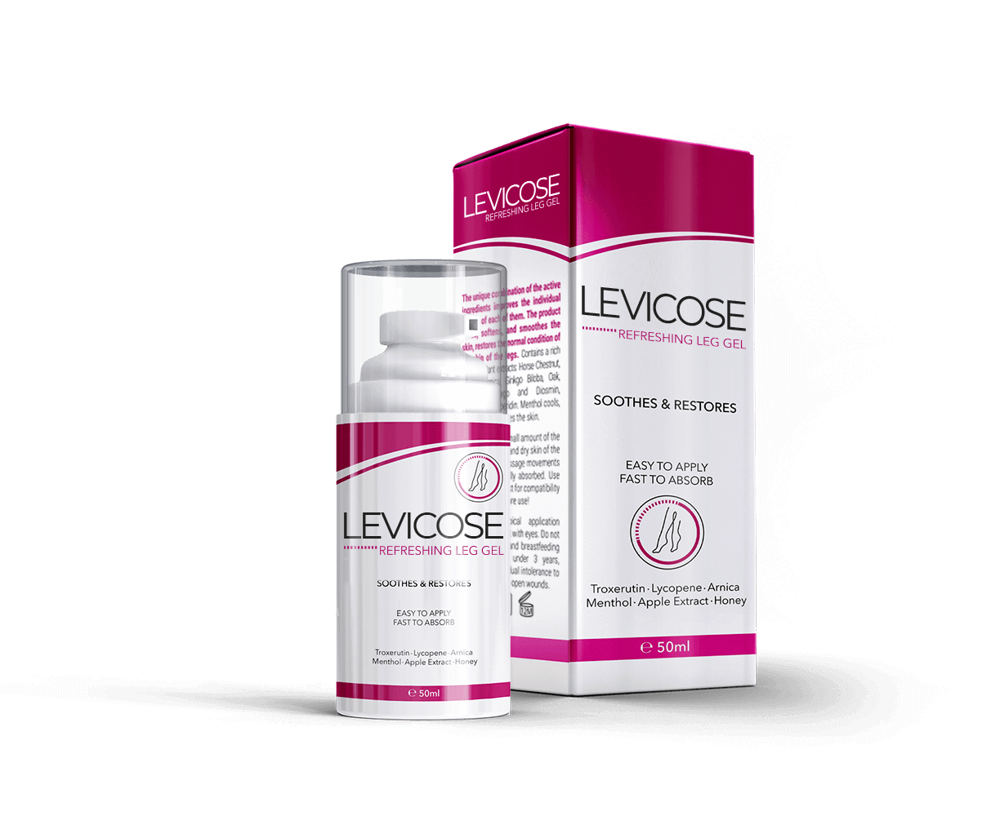
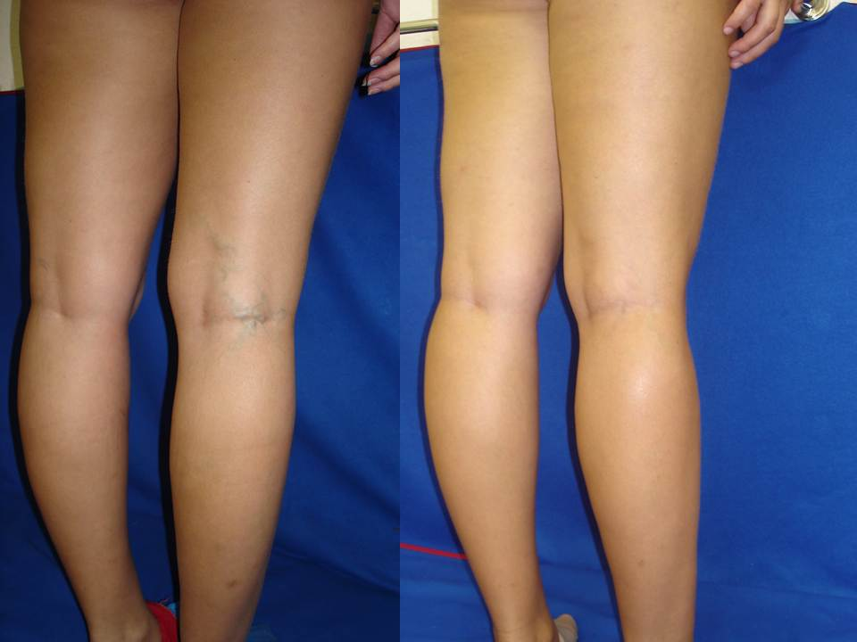

Hogy szabadultam meg a visszértágulástól 1 hét alatt
Publikálva | Szerző:

Üdv, itt újra Petra! Szeretném önökkel megosztani egy kis örömöm... Mégis sikerült MEGSZABADULNOM a visszértágulástól, ráadásul otthoni körülmények között mindössze 1 hét alatt!!!
Emlékeznek, hogy körülbelül 1 évvel ezelőtt írtam, hogy rettenetesen fájnak a lábaim, visszérgyulladás lépett fel, és az önök tanácsát kértem, hogy lehet tőle megszabadulni?
Így hát sorra próbáltam az összes népi módszert, többek között a nyírfarügyet és egyéb badarságot, valamint véráramlás javító készítményeket, alakformáló harisnyanadrágot és így tovább. EZ MIND CSUPA OSTOBASÁG. Nem segít. Haszontalan.
Jártam orvosoknál, akik végül is semmivel sem segítettek, csak összeszidtak, hogy húztam-halasztottam a kezelést. A munkahelyen kivettem egy hét fizetés nélküli szabadságot. Depresszióm lett, azon töprengtem, hogy lehetne megszabadulni a visszérgyulladástól, visszaszerezni lábaim szépségét és egészségét, és az interneten különböző gyógymódokat kerestem.
Megtalálták a visszérgyulladás ellenszerét?!
S egyszer csak, a világháló blogjait böngészve egy orvosi fórumon felkeltette figyelmet egy moszkvai phlebológus megjegyzése arról, hogy a mi országunkban nem hatásos a visszérgyulladás gyógyítása mert a hagyományos orvoslás nem a betegség okát, hanem a tüneteit kezeli.
Emellett a „”, a visszérgyulladás elleni új gélre hivatkozott, ami nagyon magas százalékban mutat pozitív eredményeket. Sokáig kerestem információt arról, hol lehet hozzájutni az adott gélhez, és megtaláltam ezt az áruházat.
Eleinte nem hittem különösebben mindebben, hiszen már annyi mindent reklámoztak a tévében, de annyi jó véleményt találtam erről a gélről, hogy elhatároztam, hogy megrendelem.
Végül is megrendeltem a „’. A küldemény nagyjából egy hét múlva érkezett meg. Kicsomagoltam az egészet, elolvastam az utasítást, és elkezdtem használni.
Milyen eredménnyel? Elmúlt a visszérgyulladás?
Úgy kezdtem el használni ezt a gélet, ahogy az utasításban volt írva. No, mit gondolnak? Már az 5-ik napra visszafejlődtek a vizenyők és a visszeres vénák szemlátomást kezdtek eltűnni, és majdnem leesett az állam!!! Megszabadultam a VISSZÉRGYULLADÁSTÓL!!! 5 nap alatt!!!!! El tudják ezt hinni??? Nem hittem a saját szememnek... A lábam megtisztult a visszérhálóktól, szép lett és már nem fájtak!!!!! Nem tévedtem, és nem őrültem meg! Le sem bírom írni az örömöm. Utoljára talán 20 évvel ezelőtt örültem ennyire :)
Most teljesen egészséges embernek érzem magam. . Hah! még hálás is vagyok a betegségemnek — a visszérgyulladás megtanított engem értékelni azt, amim van, és másképp tekinteni az életben előforduló kisebb zavarokra. Igyekszem nem gondolni ara, milyen roncs lett volna belőlem, ha nem találok rá a „”. Most az életemben nincs helyük a sötét és komor gondolatoknak, csak a pozitívoknak!
Eszméletlenül örülök, hogy minden így alakult. A visszérgyulladástól való megszabadulással egyidejűleg megértettem, hogy sokunk problémája az, hogy a legegyszerűbb dolgok nekünk nem tűnnek hatásosnak. Míg a bonyolultak, mint egy műtét, hatásosnak tűnnek. De ez nem így van. A visszérgyulladást egyszerűbb, gyorsabb és biztonságosabb módon meg lehet gyógyítani. Ellenőrizve!
Annak, akit érdekel – – a megrendelést ezen az oldalon adtam fel. Ez Magyarországon az egyetlen tanúsított cég, amelyik a "„ forgalmazza. Ami a kiszállítást illeti, a küldemény postai utánvétellel érkezik. Így minden biztonságos.
A "" most csökkentett áron kapható, ezért igyekezzenek most megrendelni!
Nos, remélem, hogy a közölt információ hasznos volt az Ön számára, és végre-valahára néhány nap alatt eléri a kívánt szépséget és az egészséges lábakat! Sok sikert önnek!





bloggerek Online


279 a felhasználók nem logója...